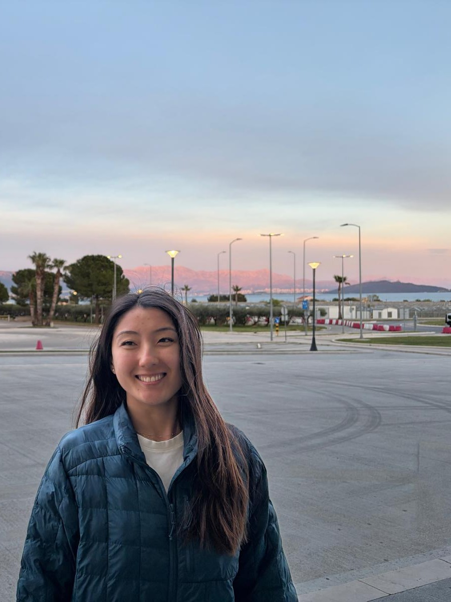
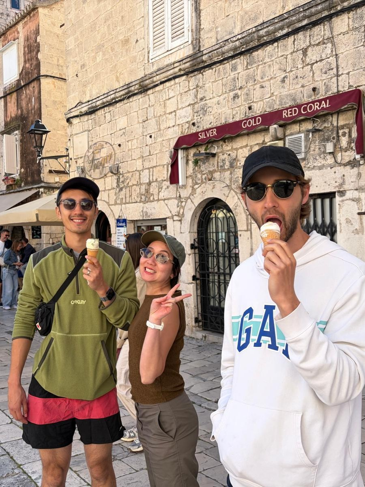

← Travel
Split 2026
We moved onto Croatia with James and Pat, home of the Game of Thrones filming locations! Even though I wasn't a huge fan, I certainly became one on this trip.

9th April 2026
We arrived in Split by plane and were immediately greeted by a beutiful sunset. We were astounded by the white marble streets and capped our arrival off with some excellent seafood. The place we were staying was an interesting mix, lots of stairs but a roomy and nice layout.
This was our first opportunity to wonder the white paved streets. We saw lots of Game of Thrones shops and even got a chance to sit on the iron throne. We learnt a bit about the history of Split through a tour guide and got to rub the shiny big toe of this giant statue.

11th April 2026
We set off in the morning to do a hike along the north coastline to get a better vantage point of the city. It was quite hot but you can see why SPlit has become a popular tourist destination. Boats can pull up right to the city and the views are absolutely stunning. On that point, we hopped on our own boat tour and went to a few different spots nearby. We saw old castles which were used in GoT and bagged ourselves some interesting ice cream. We even took a dip off the boat into the ICE COLD water but we couldn't stay in there for long! Apparently the waters reach over 30 degrees in the summer! We played with a few sea urchins and got up close and personal with the sunset before we headed back and ended our time in Split.